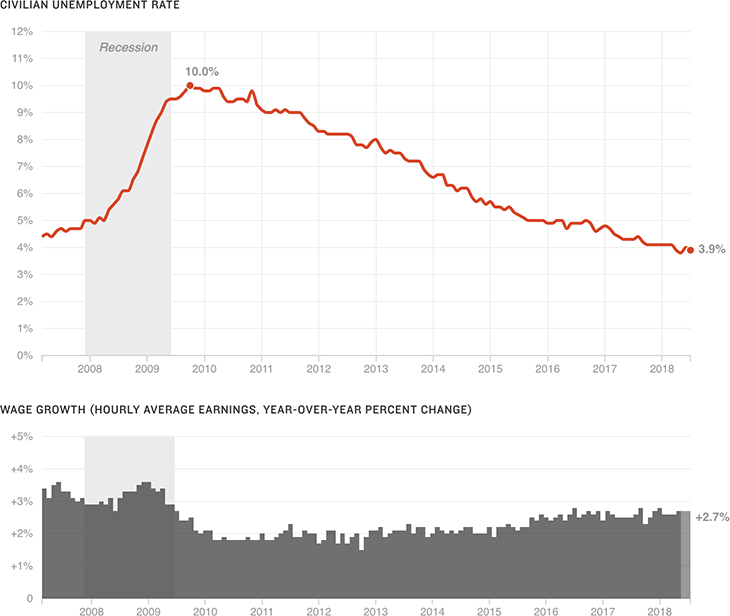

{% extends 'base_template.html' %}

{% block content %}

    {% if COPY.labels.headline %}<h1>{{ COPY.labels.headline|smarty }}</h1>{% endif %}
    {% if COPY.labels.subhed %}<h2>{{ render(COPY.labels.subhed)|smarty }}</h2>{% endif %}

    <h3>{{ COPY.labels.hed_unemployment }}</h3>
    <div id="line-chart" class="graphic">
        
    </div>

    {% if COPY.labels.mode_secondary and (COPY.labels.mode_secondary|string() != "none") %}
    <h3>{{ COPY.labels.hed_secondary }}</h3>
    <div id="column-chart" class="graphic">
        
    </div>
    {% endif %}

    {% if COPY.labels.footnote %}
    <div class="footnotes">
        <p><strong>Notes:</strong> {{ COPY.labels.footnote|smarty }}</p>
    </div>
    {% endif %}

    <div class="footer">
        {% if COPY.labels.source %}<p>Source: {{ COPY.labels.source|smarty }}</p>{% endif %}
        {% if COPY.labels.credit %}<p>Credit: {{ COPY.labels.credit|smarty }}</p>{% endif %}
    </div>

    <script type="text/javascript">
        var SECONDARY_MODE = '{{ COPY.labels.mode_secondary }}';
        var UNEMPLOYMENT_DATA = {{ COPY.unemployment.json() }};

        {% if (COPY.labels.mode_secondary|string() == "payrolls-year") %}
            var SECONDARY_DATA = {{ COPY.payrolls_year.json() }};
        {% elif (COPY.labels.mode_secondary|string() == "payrolls-month") %}
            var SECONDARY_DATA = {{ COPY.payrolls_month.json() }};
        {% elif (COPY.labels.mode_secondary|string() == "wages") %}
            var SECONDARY_DATA = {{ COPY.wages.json() }};
        {% endif %}
    </script>

{% endblock content %}
